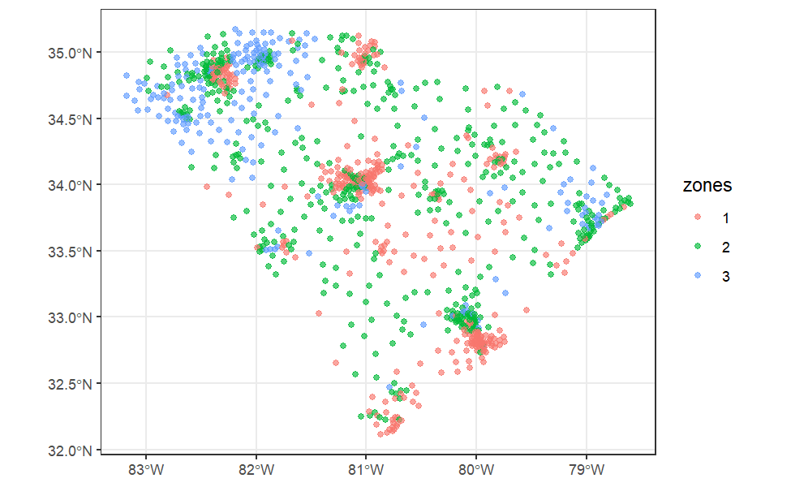

Install and load R packages
install.packages(c("sf","gdverse"), dep = T)
# install.packages("devtools")
devtools::install_github("ausgis/sesp",
build_vignettes = TRUE,
dep = TRUE)Equivalence of Q Values in the Native Geographical Detector and Linear Regression Framework
NTDs = sf::st_as_sf(gdverse::NTDs, coords = c('X','Y'))
system.time({
go1 = sesp(incidence ~ ., data = NTDs, discvar = 'none',
model = 'ols', overlay = 'intersection')
})
## user system elapsed
## 0.44 0.00 0.55
system.time({
go2 = gd(incidence ~ ., data = NTDs,
type = c('factor','interaction'))
})
## user system elapsed
## 0.06 0.02 0.09Factor detector
go1$factor
## # A tibble: 3 × 5
## Variable Qvalue AIC BIC LogLik
## <chr> <dbl> <dbl> <dbl> <dbl>
## 1 watershed 0.638 -10.0 -10.0 15.0
## 2 elevation 0.607 1.18 1.18 7.41
## 3 soiltype 0.386 79.7 79.7 -33.8
go2$factor
## # A tibble: 3 × 3
## variable `Q-statistic` `P-value`
## <chr> <dbl> <dbl>
## 1 watershed 0.638 0.000129
## 2 elevation 0.607 0.0434
## 3 soiltype 0.386 0.372Interaction detector
go1$interaction
## # A tibble: 3 × 5
## Variable Interaction Qv1 Qv2 Qv12
## <chr> <chr> <dbl> <dbl> <dbl>
## 1 watershed ∩ elevation Enhance, bi- 0.638 0.607 0.714
## 2 watershed ∩ soiltype Enhance, bi- 0.638 0.386 0.736
## 3 elevation ∩ soiltype Enhance, bi- 0.607 0.386 0.664
go2$interaction
## # A tibble: 3 × 6
## variable1 variable2 Interaction `Variable1 Q-statistics` `Variable2 Q-statistics`
## <chr> <chr> <chr> <dbl> <dbl>
## 1 watershed elevation Enhance, bi- 0.638 0.607
## 2 watershed soiltype Enhance, bi- 0.638 0.386
## 3 elevation soiltype Enhance, bi- 0.607 0.386
## # ℹ 1 more variable: `Variable1 and Variable2 interact Q-statistics` <dbl>Spatially Explicit Stratified Power Model Under The Spatial Linear Regression Framework
Using the same data as the gdverse idsa vignette:
depression = system.file('extdata/Depression.csv',package = 'gdverse') |>
readr::read_csv() |>
sf::st_as_sf(coords = c('X','Y'), crs = 4326)
## Rows: 1072 Columns: 13
## ── Column specification ───────────────────────────────────────────────────────────────────────────
## Delimiter: ","
## dbl (13): X, Y, Depression_prevelence, PopulationDensity, Population65, NoHealthInsurance, Neig...
##
## ℹ Use `spec()` to retrieve the full column specification for this data.
## ℹ Specify the column types or set `show_col_types = FALSE` to quiet this message.
depression
## Simple feature collection with 1072 features and 11 fields
## Geometry type: POINT
## Dimension: XY
## Bounding box: xmin: -83.1795 ymin: 32.11464 xmax: -78.6023 ymax: 35.17354
## Geodetic CRS: WGS 84
## # A tibble: 1,072 × 12
## Depression_prevelence PopulationDensity Population65 NoHealthInsurance Neighbor_Disadvantage
## * <dbl> <dbl> <dbl> <dbl> <dbl>
## 1 23.1 61.5 22.5 7.98 -0.0525
## 2 22.8 58.3 16.8 11.0 -0.254
## 3 23.2 35.9 24.5 9.31 -0.0540
## 4 21.8 76.1 21.8 13.2 0.0731
## 5 20.7 47.3 22.0 11 0.763
## 6 21.3 32.5 19.2 13.0 0.422
## 7 22 36.9 19.2 10.8 0.113
## 8 21.2 61.5 15.9 8.57 -0.154
## 9 22.7 67.2 15.7 17.8 -0.320
## 10 20.6 254. 11.3 12.7 0.457
## # ℹ 1,062 more rows
## # ℹ 7 more variables: Beer <dbl>, MentalHealthPati <dbl>, NatureParks <dbl>, Casinos <dbl>,
## # DrinkingPlaces <dbl>, X.HouseRent <dbl>, geometry <POINT [°]>Apply natural breaks to the response variable to generate 3 local zones
yzone = sdsfun::discretize_vector(depression$Depression_prevelence,3,method = 'natural')
depressionmap = sf::st_sf(zones = yzone,geom = sf::st_geometry(depression))
ggplot2::ggplot(data = depressionmap) +
ggplot2::geom_sf(ggplot2::aes(color = factor(zones)), alpha = .65) +
ggplot2::labs(color = 'zones') +
ggplot2::theme_bw()
Spatially Explicit Stratified Power Model With Linear Regression
system.time({
g1 = sesp(Depression_prevelence ~ ., data = depression, yzone = yzone,
model = 'ols', overlay = 'intersection', cores = 8)
})
## user system elapsed
## 6.17 1.29 21.65
g1
## *** Spatially Explicit Stratified Power
##
## Q values are estimated using *Ordinary Least Square*
##
## -------------- Global Power of Determinat : ------------
## Variable Qvalue AIC BIC LogLik
## PopulationDensity 0.278 4404.766 4404.766 -2193.383
## Population65 0.201 4507.632 4507.632 -2247.816
## NoHealthInsurance 0.214 4491.437 4491.437 -2238.719
## Neighbor_Disadvantage 0.194 4516.820 4516.820 -2252.410
## Beer 0.192 4522.881 4522.881 -2253.441
## MentalHealthPati 0.207 4498.614 4498.614 -2243.307
## NatureParks 0.184 4529.323 4529.323 -2258.662
## Casinos 0.184 4529.888 4529.888 -2258.944
## DrinkingPlaces 0.204 4503.093 4503.093 -2245.547
## X.HouseRent 0.259 4428.440 4428.440 -2207.220
##
## ------------- Global Variable Interaction : ------------
## Variable Interaction
## PopulationDensity ∩ Population65 Enhance, bi-
## PopulationDensity ∩ NoHealthInsurance Enhance, bi-
## PopulationDensity ∩ Neighbor_Disadvantage Enhance, bi-
## PopulationDensity ∩ Beer Enhance, bi-
## PopulationDensity ∩ MentalHealthPati Enhance, bi-
## PopulationDensity ∩ NatureParks Enhance, bi-
## PopulationDensity ∩ Casinos Enhance, bi-
## PopulationDensity ∩ DrinkingPlaces Enhance, bi-
## PopulationDensity ∩ X.HouseRent Enhance, bi-
## Population65 ∩ NoHealthInsurance Enhance, bi-
##
## ! Only the top ten items of global scale are displayed.
## ! The others can be accessed through specific subsets.Spatially Explicit Stratified Power Model With Spatial Lag Regression
system.time({
g2 = sesp(Depression_prevelence ~ ., data = depression,
yzone = yzone, model = 'lag', cores = 8)
})
## user system elapsed
## 6.89 0.77 268.46
g2
## *** Spatially Explicit Stratified Power
##
## Q values are estimated using *Spatial Lag Model*
##
## -------------- Global Power of Determinat : ------------
## Variable Qvalue AIC BIC LogLik
## PopulationDensity 0.172 4315.505 4315.505 -2149.753
## Population65 0.157 4336.429 4336.429 -2161.214
## NoHealthInsurance 0.170 4325.982 4325.982 -2154.991
## Neighbor_Disadvantage 0.153 4347.690 4347.690 -2166.845
## Beer 0.128 4356.675 4356.675 -2170.337
## MentalHealthPati 0.161 4335.474 4335.474 -2160.737
## NatureParks 0.147 4364.919 4364.919 -2175.460
## Casinos 0.134 4351.252 4351.252 -2168.626
## DrinkingPlaces 0.162 4330.582 4330.582 -2158.291
## X.HouseRent 0.221 4286.168 4286.168 -2135.084
##
## ------------- Global Variable Interaction : ------------
## Variable Interaction
## PopulationDensity ∩ Population65 Enhance, bi-
## PopulationDensity ∩ NoHealthInsurance Enhance, bi-
## PopulationDensity ∩ Neighbor_Disadvantage Enhance, bi-
## PopulationDensity ∩ Beer Enhance, bi-
## PopulationDensity ∩ MentalHealthPati Weaken, uni-
## PopulationDensity ∩ NatureParks Enhance, bi-
## PopulationDensity ∩ Casinos Weaken, uni-
## PopulationDensity ∩ DrinkingPlaces Enhance, bi-
## PopulationDensity ∩ X.HouseRent Enhance, bi-
## Population65 ∩ NoHealthInsurance Enhance, bi-
##
## ! Only the top ten items of global scale are displayed.
## ! The others can be accessed through specific subsets.Spatially Explicit Stratified Power Model With Spatial Error Regression
system.time({
g3 = sesp(Depression_prevelence ~ ., data = depression,
yzone = yzone, model = 'error', cores = 8)
})
## user system elapsed
## 7.55 1.08 136.93
g3
## *** Spatially Explicit Stratified Power
##
## Q values are estimated using *Spatial Error Model*
##
## -------------- Global Power of Determinat : ------------
## Variable Qvalue AIC BIC LogLik
## PopulationDensity 0.260 4242.465 4242.465 -2111.232
## Population65 0.195 4294.715 4294.715 -2140.358
## NoHealthInsurance 0.208 4283.546 4283.546 -2133.773
## Neighbor_Disadvantage 0.188 4309.098 4309.098 -2147.549
## Beer 0.180 4302.506 4302.506 -2142.253
## MentalHealthPati 0.197 4293.660 4293.660 -2139.830
## NatureParks 0.176 4330.177 4330.177 -2158.089
## Casinos 0.173 4304.348 4304.348 -2145.174
## DrinkingPlaces 0.195 4294.383 4294.383 -2140.192
## X.HouseRent 0.253 4243.816 4243.816 -2113.908
##
## ------------- Global Variable Interaction : ------------
## Variable Interaction
## PopulationDensity ∩ Population65 Enhance, bi-
## PopulationDensity ∩ NoHealthInsurance Enhance, bi-
## PopulationDensity ∩ Neighbor_Disadvantage Enhance, bi-
## PopulationDensity ∩ Beer Enhance, bi-
## PopulationDensity ∩ MentalHealthPati Enhance, bi-
## PopulationDensity ∩ NatureParks Enhance, bi-
## PopulationDensity ∩ Casinos Enhance, bi-
## PopulationDensity ∩ DrinkingPlaces Enhance, bi-
## PopulationDensity ∩ X.HouseRent Enhance, bi-
## Population65 ∩ NoHealthInsurance Enhance, bi-
##
## ! Only the top ten items of global scale are displayed.
## ! The others can be accessed through specific subsets.Spatially Explicit Stratified Power Model With Spatial Durbin Regression
system.time({
g4 = sesp(Depression_prevelence ~ ., data = depression, yzone = yzone,
model = 'lag', durbin = TRUE, cores = 8)
})
## user system elapsed
## 10.22 1.74 246.28
g4
## *** Spatially Explicit Stratified Power
##
## Q values are estimated using *Spatial Durbin Model*
##
## -------------- Global Power of Determinat : ------------
## Variable Qvalue AIC BIC LogLik
## PopulationDensity 0.241 4258.246 4258.246 -2116.123
## Population65 0.212 4293.682 4293.682 -2135.841
## NoHealthInsurance 0.226 4284.655 4284.655 -2129.328
## Neighbor_Disadvantage 0.203 4309.408 4309.408 -2143.704
## Beer 0.238 4283.330 4283.330 -2124.665
## MentalHealthPati 0.302 4251.558 4251.558 -2110.779
## NatureParks 0.245 4295.636 4295.636 -2130.818
## Casinos 0.226 4295.287 4295.287 -2132.643
## DrinkingPlaces 0.218 4287.728 4287.728 -2132.864
## X.HouseRent 0.274 4243.204 4243.204 -2108.602
##
## ------------- Global Variable Interaction : ------------
## Variable Interaction
## PopulationDensity ∩ Population65 Enhance, bi-
## PopulationDensity ∩ NoHealthInsurance Enhance, bi-
## PopulationDensity ∩ Neighbor_Disadvantage Enhance, bi-
## PopulationDensity ∩ Beer Enhance, bi-
## PopulationDensity ∩ MentalHealthPati Enhance, bi-
## PopulationDensity ∩ NatureParks Enhance, bi-
## PopulationDensity ∩ Casinos Enhance, bi-
## PopulationDensity ∩ DrinkingPlaces Enhance, bi-
## PopulationDensity ∩ X.HouseRent Enhance, bi-
## Population65 ∩ NoHealthInsurance Enhance, bi-
##
## ! Only the top ten items of global scale are displayed.
## ! The others can be accessed through specific subsets.Spatially Explicit Stratified Power Model With Geographically Weighted Regression
system.time({
g5 = sesp(Depression_prevelence ~ ., data = depression,
yzone = yzone, model = 'gwr', cores = 8)
})
## user system elapsed
## 9.42 1.81 134.97
g5
## *** Spatially Explicit Stratified Power
##
## Q values are estimated using *Geographically Weighted Regression*
##
## -------------- Global Power of Determinat : ------------
## Variable Qvalue AIC
## PopulationDensity 0.255 4428.172
## Population65 0.355 4278.376
## NoHealthInsurance 0.250 4435.042
## Neighbor_Disadvantage 0.363 4263.032
## Beer 0.267 4411.036
## MentalHealthPati 0.357 4273.905
## NatureParks 0.270 4407.348
## Casinos 0.339 4305.724
## DrinkingPlaces 0.274 4401.081
## X.HouseRent 0.295 4370.236
##
## ------------- Global Variable Interaction : ------------
## Variable Interaction
## PopulationDensity ∩ Population65 Weaken, uni-
## PopulationDensity ∩ NoHealthInsurance Enhance, bi-
## PopulationDensity ∩ Neighbor_Disadvantage Enhance, bi-
## PopulationDensity ∩ Beer Enhance, bi-
## PopulationDensity ∩ MentalHealthPati Weaken, uni-
## PopulationDensity ∩ NatureParks Enhance, bi-
## PopulationDensity ∩ Casinos Weaken, uni-
## PopulationDensity ∩ DrinkingPlaces Weaken, uni-
## PopulationDensity ∩ X.HouseRent Enhance, bi-
## Population65 ∩ NoHealthInsurance Weaken, uni-
##
## ! Only the top ten items of global scale are displayed.
## ! The others can be accessed through specific subsets.Results of local zones-based power of determinat
g1$localq
## # A tibble: 30 × 6
## Variable Qvalue AIC BIC LogLik Zone
## <chr> <dbl> <dbl> <dbl> <dbl> <int>
## 1 PopulationDensity 0.141 666. 666. -324. 3
## 2 Population65 0.0673 677. 677. -333. 3
## 3 NoHealthInsurance 0.0545 680. 680. -334. 3
## 4 Neighbor_Disadvantage 0.0830 674. 674. -331. 3
## 5 Beer 0.0613 683. 683. -333. 3
## 6 MentalHealthPati 0.0500 681. 681. -335. 3
## 7 NatureParks 0.0611 679. 679. -333. 3
## 8 Casinos 0.0490 682. 682. -335. 3
## 9 DrinkingPlaces 0.0522 681. 681. -334. 3
## 10 X.HouseRent 0.0590 681. 681. -334. 3
## # ℹ 20 more rows
g2$localq
## # A tibble: 30 × 6
## Variable Qvalue AIC BIC LogLik Zone
## <chr> <dbl> <dbl> <dbl> <dbl> <int>
## 1 PopulationDensity 0.0791 679. 679. -331. 3
## 2 Population65 0.0713 679. 679. -332. 3
## 3 NoHealthInsurance 0.0597 681. 681. -334. 3
## 4 Neighbor_Disadvantage 0.0863 675. 675. -331. 3
## 5 Beer 0.0537 684. 684. -334. 3
## 6 MentalHealthPati 0.0545 682. 682. -334. 3
## 7 NatureParks 0.0657 680. 680. -333. 3
## 8 Casinos 0.0532 682. 682. -334. 3
## 9 DrinkingPlaces 0.0570 682. 682. -334. 3
## 10 X.HouseRent 0.0640 682. 682. -333. 3
## # ℹ 20 more rows
g3$localq
## # A tibble: 30 × 6
## Variable Qvalue AIC BIC LogLik Zone
## <chr> <dbl> <dbl> <dbl> <dbl> <int>
## 1 PopulationDensity 0.141 667. 667. -323. 3
## 2 Population65 0.0673 679. 679. -333. 3
## 3 NoHealthInsurance 0.0543 682. 682. -334. 3
## 4 Neighbor_Disadvantage 0.0830 676. 676. -331. 3
## 5 Beer 0.0611 684. 684. -333. 3
## 6 MentalHealthPati 0.0498 683. 683. -334. 3
## 7 NatureParks 0.0611 681. 681. -333. 3
## 8 Casinos 0.0488 683. 683. -334. 3
## 9 DrinkingPlaces 0.0520 683. 683. -334. 3
## 10 X.HouseRent 0.0589 683. 683. -334. 3
## # ℹ 20 more rows
g4$localq
## # A tibble: 30 × 6
## Variable Qvalue AIC BIC LogLik Zone
## <chr> <dbl> <dbl> <dbl> <dbl> <int>
## 1 PopulationDensity 0.133 676. 676. -325. 3
## 2 Population65 0.109 677. 677. -328. 3
## 3 NoHealthInsurance 0.118 675. 675. -327. 3
## 4 Neighbor_Disadvantage 0.114 676. 676. -327. 3
## 5 Beer 0.138 682. 682. -324. 3
## 6 MentalHealthPati 0.106 686. 686. -328. 3
## 7 NatureParks 0.182 670. 670. -318. 3
## 8 Casinos 0.108 686. 686. -328. 3
## 9 DrinkingPlaces 0.102 679. 679. -329. 3
## 10 X.HouseRent 0.128 677. 677. -325. 3
## # ℹ 20 more rows
g5$localq
## # A tibble: 30 × 4
## Variable Qvalue AIC Zone
## <chr> <dbl> <dbl> <int>
## 1 PopulationDensity 0.106 664. 3
## 2 Population65 0.162 652. 3
## 3 NoHealthInsurance 0.0662 672. 3
## 4 Neighbor_Disadvantage 0.131 658. 3
## 5 Beer 0.0619 673. 3
## 6 MentalHealthPati 0.150 658. 3
## 7 NatureParks 0.0815 669. 3
## 8 Casinos 0.138 659. 3
## 9 DrinkingPlaces 0.0849 668. 3
## 10 X.HouseRent 0.133 660. 3
## # ℹ 20 more rows